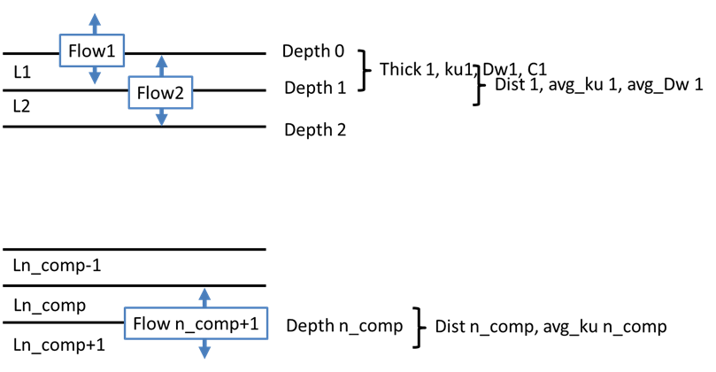
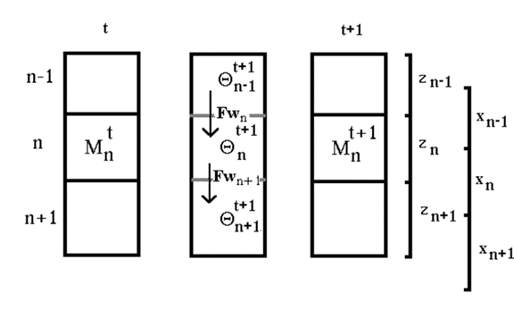
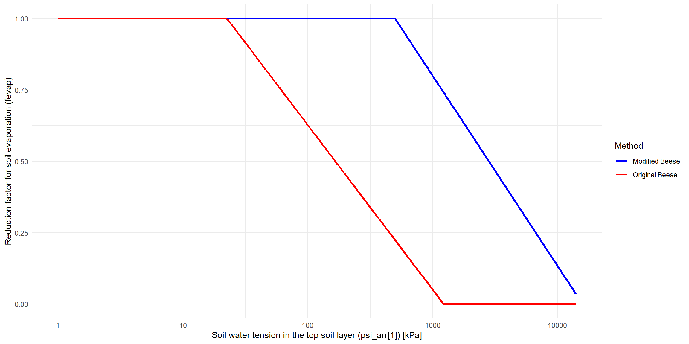

Model compontent for simulation of soil water transport and root soil water uptake
TSoilWaterMod
1 Introduction
1.1 Ancestor classes
The class TSoilWaterModelR has the following ancestor classes shown in Table Table 1.
| AncestorClass | Namespace |
|---|---|
| TSoilWaterMod | USoilWaterMod |
| TLayeredSoil | UlayeredSoil |
| TPlantRelatedSubMod | UAbstractPlant |
| TSubmodel | UMod |
| TGraphicControl | Vcl.Controls |
| TControl | Vcl.Controls |
| TComponent | System.Classes |
| TPersistent | System.Classes |
| TObject | System |
TRUE
2 Scientific Background
2.1 Parameterisation of soil water retention and hydraulic conductivity
The module is based on the Van Genuchten-Mualem approach for parameterisation of soil water retention and hydraulic conductivity. The soil water retention curve is described by the following equation:
\theta = \theta_r + \frac{\theta_s - \theta_r}{(1 + (\alpha \cdot h)^n)^m} \tag{1}
Where \theta is the soil water content, \theta_r is the residual soil water content, \theta_s is the saturated soil water content, h is the soil water suction, and \alpha, n, and m are empirical parameters that describe the shape of the soil water retention curve. The hydraulic conductivity is calculated based on the soil water retention curve and the Mualem model, which describes the relationship between hydraulic conductivity and soil water content.
The parameters of this equation can be determined based on soil texture and bulk density using pedotransfer functions, which are empirical relationships that relate soil properties to the parameters of the Van Genuchten-Mualem model. The module includes currently two sets of pedotransfer functions for different soil textures, which can be used to estimate the parameters based on the soil texture and bulk density. The first is based on the Bodenkundliche Kartieranleitung (KA5) and the second is based on the publication of Renger et al. (2012). The user can choose between these two sets of pedotransfer functions based on the soil texture and bulk density of the soil being simulated. It is, however also possible to use specific values of the parameters of the Van Genuchten-Mualem model.
2.2 Soil water transport
The module TSoilWaterModelR simulates the vertical transport of water in the soil profile. The transport of water is either driven by gradients in soil water potential, which can be expressed as the sum of the pressure potential and the gravitational potential. The flow of water between two compartments is calculated based on the hydraulic conductivity and the gradient in soil water potential between these compartments.
Also a simpler tipping bucket approach is implemented, which is based on the assumption that water flows from one compartment to the next until the water content of the upper compartment reaches field capacity. This approach is numerically stable and fast, but does not consider upward flow of water such as cappilary rise and does not allow for over saturation of soil layers which may an important role in denitrification processes as well as an extra storage of water for later consumption of the crops..
2.2.1 Spatial discretisation
For the numerical solutions of the water and mass transport equations, the soil profile is divided into a number of layers. The standard is a resolution in 20 layers S with a layer thickness of 10 cm each. In principle, other resolutions are also possible, provided that the code of all components using this concept correctly. With variable depth resolution, it is important to differentiate between the distance between the center points of the compartments and the thickness. The former determines the transport distances and thus the gradients for the transport of water and nutrients, the latter is part of the buffering, ie the change in water contents / concentrations due to the spatial divergence of the flows.

2.2.2 Transport equations
The water balance in the soil profile can be described by the continuity equation:
\frac{d\theta }{dt}=\frac{dFw}{dz}-{{S}_{(z,t)}} \tag{2}
When converting to a finite difference approach, this results in:
\frac{{{\theta }^{t+1}}-{{\theta }^{t+1}}}{\Delta t}=\frac{F{{w}_{\,in}}-F{{w}_{\,out}}}{\Delta z}-{{S}_{(z,t}}_{)} \tag{3}
or
{{\theta }^{t+1}}\Delta z={{\theta }^{t+1}}\Delta z+\left( F{{w}_{\,in}}-F{{w}_{\,out}} \right)\cdot \Delta t-{{S}_{(z,t)}} \tag{4}
Where \theta \cdot \Delta z corresponds to the amount of water M in a compartment.

The change in the amount of water [M_{n}^{t+1}] - [M_{n}^{t}] in a compartment in the time period t is equal to the difference in the flow into and out of this compartment and the change in water content due to other sinks S (water uptake, evaporation):
M_{n}^{t+1}=M_{n}^{t}+\left( F{{w}_{n}}-F{{w}_{n+1}} \right)\cdot \Delta t-{{S}_{n}}\cdot \Delta t \tag{5}
The flow towards the groundwater has a positive sign by definition. The amount of water at time step t+1 therefore can be written:
\theta {{_{n}^{t+1}}^{.}}z_{n}^{{}}=\theta {{_{n}^{t}}^{.}}z_{n}^{{}}+{{({{F}_{w}}_{n}^{t+1}-{{F}_{w}}_{n+1}^{t+1})}^{.}}\Delta t-{{S}_{n}}\cdot \Delta t \tag{6}
2.2.3 Solutions of the vertical water balance equation
2.2.3.1 Diffussivity approach
The approach of using the water diffusivity D for calculating the flow of water between compartments is based on the assumption that the flow of water is proportional to the gradient in water content between two compartments. The diffusivity D is thereby a function of the water content and can be calculated as the product of the hydraulic conductivity and the specific water storage capacity.
This approach has advantages and disadvantages. The main advantage is that it is numerically stable and has a good mass balance, which is important for long-term simulations. The main disadvantage is that it is not suitable for heterogeneous soil profiles with strongly varying textures, as it can lead to flows against the potential gradient between layers with different textures.
2.3 Root water uptake
2.4 Soil evaporation
Actual evaporation [mm d-1] (Eact) is calculated by a reduction factor (fevap), which corrects Epot by the influence of low soil water content in the top soil layer.
{{E}_{act}}={{E}_{pot}}\cdot {{red}_{evap}} \tag{7}
Within the module two different options for calculation of evaporation are included. The option called modified Beese is the default:
{{red}_{evap}}=max\left(0, min \left(1,\frac{-1\cdot (\log 10(ps{{i}_{arr[1]}})-4.2)}{4.2-\log 10(ps{{i}_{critevap}})}\right)\right) \tag{8}
the original function according to Beese1978 however is available as well:
red_{evap} = max\left(0, min \left(1,-0.5767 * log_{10}(psi_{arr1}) + 1.78\right)\right) \tag{9}
Thereby psiarr[1] is the soil water tension in the top soil compartment and psicritevap is the soil water tension at which evaporation is reduced. The initiation of soil water potential (psi) is simply done by a parameter psiini. The parameter value of psicritevap has a default value of 500 [hPa].

2.4.1 Details of numerical solutions
Starting with the mass balance i.e. the amount of water [cm] within a compartment n at the time t M_{n}^{t}, the change in the amount of water can be calculated as the difference between the influx F_{w_{n}} and the efflux F_{w_{n+1}} and the sink term S_{n} (Eq. 15). The amount of water can also be expressed as the product of the water content \theta and the thickness of the compartment D (Eq. 16).
M_{n}^{t+1}=M_{n}^{t}+{{({{F}_{w}}_{n}^{t+1}-{{F}_{w}}_{n+1}^{t+1}-{{S}_{n}})}^{.}}\Delta t \tag{10}
\theta {{_{n}^{t+1}}^{.}}D_{n}^{{}}=\theta {{_{n}^{t}}^{.}}D_{n}^{{}}+{{({{F}_{w}}_{n}^{t+1}-{{F}_{w}}_{n+1}^{t+1}-{{S}_{n}})}^{.}}\Delta t \tag{11}
The change of the amount of water is equal to the change in soil water suction times the specific water storage capacity C. This results in:
\frac{\partial \theta }{\partial t}=C\left( h \right)\frac{\partial h}{\partial t}\approx C\left( h \right)\frac{h_{n}^{t+1}-h_{n}^{t}}{\Delta t} \tag{12}
For a numerical solution of the water balance equation using the soil water suction h, the balance equation can be written in analogy to the above equations as follows:
\begin{align} & h_{n}^{t+1}\cdot C_{n}^{t+1}\cdot D_{n}^{{}}=h_{n}^{t}\cdot C_{n}^{t+1}\cdot D_{n}^{{}}+{{\left[ ku{{_{n-{}^{1}/{}_{2}}^{t+1}}^{.}}\left( \frac{h_{n}^{t+1}-h_{n-1}^{t+1}}{z_{n-1}^{{}}}+1 \right)-ku{{_{n+{}^{1}/{}_{2}}^{t+1}}^{.}}\left( \frac{h_{n+1}^{t+1}-h_{n}^{t+1}}{z_{n}^{{}}}+1 \right)-{{S}_{n}} \right]}^{.}}\Delta t \\ & \\ \end{align}
Auflösen der Klammern für die Flüsse:
h_{n}^{t+1}\cdot C_{n}^{t+1}\cdot D_{n}^{{}} = h_{n}^{t} \cdot C_{n}^{t+1} \cdot D_{n}+ku{{_{n-{}^{1}/{}_{2}}^{t+1}}^{.}} \frac{h_{n}^{t+1}-h_{n-1}^{t+1}}{z_{n-1}^{{}}}\cdot \Delta t+ku_{n-{}^{1}/{}_{2}}^{t+1}\cdot \Delta t-ku{{_{n+{}^{1}/{}_{2}}^{t+1}}^{.}} \frac{h_{n+1}^{t+1} -h_{n}^{t+1}}{z_{n}^{{}}}\cdot \Delta t-\\ku_{n+{}^{1}/{}_{2}}^{t+1}\cdot \Delta t-{{S}_{n}}\Delta t \tag{13}
Ausmultiplizieren der Flussterme:
\begin{align} & h_{n}^{t+1}\cdot C_{n}^{t+1}\cdot D_{n}^{{}}=h_{n}^{t}\cdot C_{n}^{t+1}\cdot D_{n}^{{}}+ \\ & h_{n}^{t+1}{{\cdot }^{.}}\frac{ku_{n-{}^{1}/{}_{2}}^{t+1}}{z_{n-1}^{{}}}\cdot \Delta t-h_{n-1}^{t+1}{{\cdot }^{.}}\frac{ku_{n-{}^{1}/{}_{2}}^{t+1}}{z_{n-1}^{{}}}\cdot \Delta t+ku_{n-{}^{1}/{}_{2}}^{t+1}\cdot \Delta t \\ & -h_{n+1}^{t+1}\frac{ku{{_{n+{}^{1}/{}_{2}}^{t+1}}^{.}}}{z_{n}^{{}}}\cdot \Delta t-h_{n}^{t+1}\frac{ku{{_{n+{}^{1}/{}_{2}}^{t+1}}^{.}}}{z_{n}^{{}}}\cdot \Delta t-ku_{n+{}^{1}/{}_{2}}^{t+1}\cdot \Delta t \\ & -{{S}_{n}}\cdot \Delta t \\ & \\ \end{align}
Division durch Cn*Dn:
\begin{align} & h_{n}^{t+1}=h_{n}^{t}+ \\ & h_{n}^{t+1}{{\cdot }^{.}}\frac{ku_{n-{}^{1}/{}_{2}}^{t+1}}{z_{n-1}^{{}}\cdot C_{n}^{t+1}\cdot D_{n}^{{}}}\cdot \Delta t-h_{n-1}^{t+1}{{\cdot }^{.}}\frac{ku_{n-{}^{1}/{}_{2}}^{t+1}}{z_{n-1}^{{}}\cdot C_{n}^{t+1}\cdot D_{n}^{{}}}\cdot \Delta t+\frac{ku_{n-{}^{1}/{}_{2}}^{t+1}\cdot \Delta t}{C_{n}^{t+1}\cdot D_{n}^{{}}} \\ & -h_{n+1}^{t+1}\frac{ku{{_{n+{}^{1}/{}_{2}}^{t+1}}^{.}}}{z_{n}^{{}}\cdot C_{n}^{t+1}\cdot D_{n}^{{}}}\cdot \Delta t-h_{n}^{t+1}\frac{ku{{_{n+{}^{1}/{}_{2}}^{t+1}}^{.}}}{z_{n}^{{}}\cdot C_{n}^{t+1}\cdot D_{n}^{{}}}\cdot \Delta t-\frac{ku_{n+{}^{1}/{}_{2}}^{t+1}\cdot \Delta t}{C_{n}^{t+1}\cdot D_{n}^{{}}} \\ & -\frac{{{S}_{n}}\Delta t}{C_{n}^{t+1}\cdot D_{n}^{{}}} \\ \end{align}
Ausklammern der Tensionen:
\begin{align} & h_{n}^{t+1}=h_{n}^{t}+\frac{ku_{n-{}^{1}/{}_{2}}^{t+1}\cdot \Delta t}{C_{n}^{t+1}\cdot D_{n}^{{}}}-\frac{ku_{n+{}^{1}/{}_{2}}^{t+1}\cdot \Delta t}{C_{n}^{t+1}\cdot D_{n}^{{}}}-\frac{{{S}_{n}}\Delta t}{C_{n}^{t+1}\cdot D_{n}^{{}}} \\ & -h_{n-1}^{t+1}{{\cdot }^{.}}\frac{ku_{n-{}^{1}/{}_{2}}^{t+1}}{z_{n-1}^{{}}\cdot C_{n}^{t+1}\cdot D_{n}^{{}}}\cdot \Delta t \\ & h_{n}^{t+1}{{\cdot }^{.}}\left( \frac{ku_{n-{}^{1}/{}_{2}}^{t+1}}{z_{n-1}^{{}}\cdot C_{n}^{t+1}\cdot D_{n}^{{}}}\cdot \Delta t-\frac{ku{{_{n+{}^{1}/{}_{2}}^{t+1}}^{.}}}{z_{n}^{{}}\cdot C_{n}^{t+1}\cdot D_{n}^{{}}}\cdot \Delta t \right) \\ & -h_{n+1}^{t+1}\frac{ku{{_{n+{}^{1}/{}_{2}}^{t+1}}^{.}}}{z_{n}^{{}}\cdot C_{n}^{t+1}\cdot D_{n}^{{}}}\cdot \Delta t \\ \end{align}
\begin{align} & mit \\ & P_{n}^{t+1}=\frac{\Delta t}{C_{n}^{t+1}\cdot D_{n}^{{}}}\,\,und\,\,Kf_{n}^{t+1}=\frac{ku_{n-{}^{1}/{}_{2}}^{t+1}}{z_{n-1}^{{}}} \\ \end{align}
Folgende Vereinfachung:
\begin{align} & \\ & h_{n}^{t+1}=h_{n}^{t}+\left( ku_{n-{}^{1}/{}_{2}}^{t+1}-ku_{n+{}^{1}/{}_{2}}^{t+1} \right)\cdot P_{n}^{t+1}-{{S}_{n}}\cdot P_{n}^{t+1} \\ & -h_{n-1}^{t+1}{{\cdot }^{.}}Kf_{n-{}^{1}/{}_{2}}^{t+1}\cdot P_{n}^{t+1} \\ & h_{n}^{t+1}{{\cdot }^{.}}\left( Kf_{n-{}^{1}/{}_{2}}^{t+1}\cdot P_{n}^{t+1}-Kf_{n+{}^{1}/{}_{2}}^{t+1}\cdot P_{n}^{t+1} \right) \\ & -h_{n+1}^{t+1}{{\cdot }^{.}}Kf_{n+{}^{1}/{}_{2}}^{t+1}\cdot P_{n}^{t+1} \\ & \\ \end{align}
\begin{array}{*{35}{l}} h_{n}^{t}+\left( ku_{n-{}^{1}/{}_{2}}^{t+1}-ku_{n+{}^{1}/{}_{2}}^{t+1} \right)\cdot P_{n}^{t+1}-{{S}_{n}}\cdot P_{n}^{t+1}= & B\_Vektor \\ h_{n-1}^{t+1}{{\cdot }^{.}}Kf_{n-{}^{1}/{}_{2}}^{t+1}\cdot P_{n}^{t+1} & Lower \\ h_{n}^{t+1}{{\cdot }^{.}}\left( -Kf_{n-{}^{1}/{}_{2}}^{t+1}\cdot P_{n}^{t+1}-Kf_{n+{}^{1}/{}_{2}}^{t+1}\cdot P_{n}^{t+1}+1 \right) & Diag \\ h_{n+1}^{t+1}{{\cdot }^{.}}Kf_{n+{}^{1}/{}_{2}}^{t+1}\cdot P_{n}^{t+1} & Upper \\ \end{array}
2.4.1.0.1 Lower boundary condition
For the lower boundary condition, in principle, 4 options are implemented:
- A constant water content / a constant water tension (“ConstContent”), i.e. the water content / water tension in compartment n_comp + 1 remains at the initialized value,
- a free flow (“FreeFlow”) at the lower compartment end, i.e. the water a free flow (“FreeFlow”) at the lower compartment end, i.e. the water tension in n_comp+1 is set to a lower value corresponding to the distance from the compartment center, as it would be in hydraulic equilibrium,
- No flow at the lower boundary (“NoFlow”)
- A variable groundwater level specified via the weather input file (“Groundwater”)
For the variants ConstContent, FreeFlow and Groundwater, the water tension / water content for compartment n_comp+1 is known and therefore does not need to be determined by solving the system of equations.
\begin{align} & h_{n\_comp}^{t+1}\cdot C_{n\_comp}^{t+1}\cdot D_{n\_comp}^{{}}= \\ h_{n\_comp}^{t}\cdot C_{n\_comp}^{t+1}\cdot D_{n\_comp}^{{}} \\ & \,\,\,\,\,\,\,\,\,\,\,\,\,\\,\,\,\,\,\,\,\,\,\,\,\,\,+{{\left[ ku{{_{n\_comp-{}^{1}/{}_{2}}^{t+1}}^{.}}\left( \frac{h_{n\_comp}^{t+1}-h_{n\_comp-1}^{t+1}}{z_{n\_comp-1}^{{}}}+1 \right)-ku{{_{n+{}^{1}/{}_{2}}^{t+1}}^{.}}\left( \frac{h_{n\_comp+1}^{t}-h_{n\_comp}^{t+1}}{z_{n\_comp}^{{}}}+1 \right)-{{S}_{n\_comp}} \right]}^{.}}\Delta t \\ & \\ \end{align}
Das bedeutet, dass der Term mit hn_comp+1 in den Term mit den bekannten Werten wandert und es somit keinen Term für den „upper“-Vektor gibt:
\begin{array}{*{35}{l}} h_{n}^{t}+\left( ku_{n-{}^{1}/{}_{2}}^{t+1}-ku_{n+{}^{1}/{}_{2}}^{t+1} \right)\cdot P_{n}^{t+1}-{{S}_{n}}\cdot P_{n}^{t+1}-h_{n+1}^{t+1}{{\cdot }^{.}}Kf_{n+{}^{1}/{}_{2}}^{t+1}\cdot P_{n}^{t+1}= & B\_Vektor \\ h_{n-1}^{t+1}{{\cdot }^{.}}Kf_{n-{}^{1}/{}_{2}}^{t+1}\cdot P_{n}^{t+1} & Lower \\ h_{n}^{t+1}{{\cdot }^{.}}\left( -Kf_{n-{}^{1}/{}_{2}}^{t+1}\cdot P_{n}^{t+1}-Kf_{n+{}^{1}/{}_{2}}^{t+1}\cdot P_{n}^{t+1}+1 \right) & Diag \\ {} & {} \\ \end{array}
Am oberen Rand kann die Situation von Wassersättigung bzw. sehr starker Austrocknung eintreten. In diesem Fall wechselt die Fluss- zu einer Gehaltsrandbedingung und das erste gerechnete Kompartiment ist das zweite, für das nun eine bekannte Wasserspannung im 1. Kompartiment als Randbedingung vorliegt:
\begin{align} & h_{2}^{t+1}=h_{2}^{t+1}+\frac{ku_{2-{}^{1}/{}_{2}}^{t}\cdot \Delta t}{C_{2}^{t+1}\cdot D_{2}^{{}}}-\frac{ku_{2+{}^{1}/{}_{2}}^{t+1}\cdot \Delta t}{C_{2}^{t+1}\cdot D_{2}^{{}}}-\frac{{{S}_{2}}\Delta t}{C_{2}^{t+1}\cdot D_{2}^{{}}} \\ & -h_{1}^{t}{{\cdot }^{.}}\frac{ku_{2-{}^{1}/{}_{2}}^{t+1}}{z_{1}^{{}}\cdot C_{2}^{t+1}\cdot D_{2}^{{}}}\cdot \Delta t \\ & h_{2}^{t+1}{{\cdot }^{.}}\left( \frac{ku_{2-{}^{1}/{}_{2}}^{t+1}}{z_{1}^{{}}\cdot C_{2}^{t+1}\cdot D_{2}^{{}}}\cdot \Delta t-\frac{ku{{_{2+{}^{1}/{}_{2}}^{t+1}}^{.}}}{z_{2}^{{}}\cdot C_{2}^{t+1}\cdot D_{2}^{{}}}\cdot \Delta t \right) \\ & -h_{3}^{t+1}\frac{ku{{_{2+{}^{1}/{}_{2}}^{t+1}}^{.}}}{z_{2}^{{}}\cdot C_{2}^{t+1}\cdot D_{2}^{{}}}\cdot \Delta t \\ \end{align}
Im SWAP-Modell wird die obere Randbedingung alternativ berechnet indem der Influx in die oberste Schicht mit einer angenommenen Wasserspannung an der Oberfläche (h0) berechnet wird:
\begin{align} & h_{1}^{t+1}\cdot C_{1}^{t+1}\cdot D_{1}^{{}}=h_{1}^{t}\cdot C_{1}^{t+1}\cdot D_{1}^{{}}+{{\left[ ku{{_{1}^{t+1}}^{.}}\left( \frac{h_{n}^{t+1}-h_{0}^{t}}{{}^{z_{1}^{{}}}/{}_{2}}+1 \right)-ku{{_{1+{}^{1}/{}_{2}}^{t+1}}^{.}}\left( \frac{h_{2}^{t+1}-h_{1}^{t+1}}{{{z}_{2}}}+1 \right)-{{S}_{1}} \right]}^{.}}\Delta t \\ & \\ \end{align}
Zur Berechnung des tensionsinduzierten Influx (der Infiltration) wird die halbe Dicke des ersten Kompartiments genutzt.
\begin{align} & h_{1}^{t+1}\cdot C_{1}^{t+1}\cdot D_{1}^{{}}=h_{1}^{t}\cdot C_{1}^{t+1}\cdot D_{1}^{{}} \\ & +\frac{h_{1}^{t+1}\cdot ku_{1}^{t+1}\cdot 2\cdot \Delta t}{{{z}_{1}}} \\ & -\frac{-h_{0}^{t}\cdot ku_{1}^{t+1}\cdot 2\cdot \Delta t}{z_{1}^{{}}} \\ & +ku_{1}^{t+1}\cdot \Delta t \\ & {{-}^{.}}\frac{h_{2}^{t+1}\cdot ku_{1+{}^{1}/{}_{2}}^{t+1}\cdot \Delta t}{{{z}_{2}}} \\ & +\frac{h_{1}^{t+1}\cdot ku_{1+{}^{1}/{}_{2}}^{t+1}\cdot \Delta t}{{{z}_{2}}} \\ & -ku_{1+{}^{1}/{}_{2}}^{t+1}\cdot \Delta t \\ & -{{S}_{1}}\cdot \Delta t \\ & \\ \end{align}
Ausklammern der Wasserspannungen
\begin{align} & h_{1}^{t+1}=h_{1}^{t} \\ & +\frac{h_{1}^{t+1}\cdot ku_{1}^{t+1}\cdot 2\cdot \Delta t}{{{z}_{1}}\cdot C_{1}^{t+1}\cdot D_{1}^{{}}} \\ & -\frac{-h_{0}^{t}\cdot ku_{1}^{t+1}\cdot 2\cdot \Delta t}{z_{1}^{{}}\cdot C_{1}^{t+1}\cdot D_{1}^{{}}} \\ & +\frac{ku_{1}^{t+1}\cdot \Delta t}{C_{1}^{t+1}\cdot D_{1}^{{}}} \\ & {{-}^{.}}\frac{h_{2}^{t+1}\cdot ku_{1+{}^{1}/{}_{2}}^{t+1}\cdot \Delta t}{{{z}_{2}}\cdot C_{1}^{t+1}\cdot D_{1}^{{}}} \\ & +\frac{h_{1}^{t+1}\cdot ku_{1+{}^{1}/{}_{2}}^{t+1}\cdot \Delta t}{{{z}_{2}}\cdot C_{1}^{t+1}\cdot D_{1}^{{}}} \\ & -\frac{ku_{1+{}^{1}/{}_{2}}^{t+1}\cdot \Delta t}{C_{1}^{t+1}\cdot D_{1}^{{}}} \\ & -\frac{{{S}_{1}}\cdot \Delta t}{C_{1}^{t+1}\cdot \Delta t} \\ & \\ \end{align}
Division durch C1.D1 Ausklammern und unbekannte ht+1 Terme nach links:
\begin{align} & h_{1}^{t+1}\cdot \left( -\frac{ku_{1}^{t+1}\cdot 2\cdot \Delta t}{{{z}_{1}}\cdot C_{1}^{t+1}\cdot D_{1}^{{}}}-\frac{ku_{1+{}^{1}/{}_{2}}^{t+1}\cdot \Delta t}{{{z}_{2}}\cdot C_{1}^{t+1}\cdot D_{1}^{{}}}+1 \right)+ \\ & h_{2}^{t+1}\cdot \left( \frac{ku_{1+{}^{1}/{}_{2}}^{t+1}\cdot \Delta t}{{{z}_{2}}\cdot C_{1}^{t+1}\cdot D_{1}^{{}}} \right) \\ & =h_{1}^{t}-\frac{-h_{0}^{t}\cdot ku_{1}^{t+1}\cdot 2\cdot \Delta t}{z_{1}^{{}}\cdot C_{1}^{t+1}\cdot D_{1}^{{}}}+\frac{ku_{1}^{t+1}\cdot \Delta t}{C_{1}^{t+1}\cdot D_{1}^{{}}}-\frac{ku_{1+{}^{1}/{}_{2}}^{t+1}\cdot \Delta t}{C_{1}^{t+1}\cdot D_{1}^{{}}}-\frac{{{S}_{1}}\cdot \Delta t}{C_{1}^{t+1}\cdot \Delta t} \\ & \\ \end{align}
\begin{align} & h_{1}^{t+1}=h_{1}^{t+1}+\frac{ku_{1-{}^{1}/{}_{2}}^{t}\cdot \Delta t}{C_{1}^{t+1}\cdot D_{1}^{{}}}-\frac{ku_{1+{}^{1}/{}_{2}}^{t+1}\cdot \Delta t}{C_{1}^{t+1}\cdot D_{1}^{{}}}-\frac{{{S}_{1}}\Delta t}{C_{1}^{t+1}\cdot D_{1}^{{}}} \\ & -h_{0}^{t}{{\cdot }^{.}}\frac{ku_{1}^{t+1}}{{z_{1}^{{}}}/{2}\;\cdot C_{1}^{t+1}\cdot D_{1}^{{}}}\cdot \Delta t \\ & h_{1}^{t+1}{{\cdot }^{.}}\left( \frac{ku_{1}^{t+1}}{{z_{1}^{{}}}/{2}\;\cdot C_{2}^{t+1}\cdot D_{2}^{{}}}\cdot \Delta t-\frac{ku{{_{1+{}^{1}/{}_{2}}^{t+1}}^{.}}}{z_{2}^{{}}\cdot C_{2}^{t+1}\cdot D_{2}^{{}}}\cdot \Delta t \right) \\ & -h_{3}^{t+1}\frac{ku{{_{2+{}^{1}/{}_{2}}^{t+1}}^{.}}}{z_{2}^{{}}\cdot C_{2}^{t+1}\cdot D_{2}^{{}}}\cdot \Delta t \\ \end{align}
Wenn in einem Kompartiment die Wasserspannungen unter einen kritischen Wert fallen, z.B. 1 cm, dann kann es sinnvoll sein, die tensionsinduzierten Flüsse aus der Lösung für dieses Kompartiment herauszulassen: d.h.
\begin{align} & h_{n}^{t+1}\cdot C_{n}^{t+1}\cdot D_{n}^{{}}=h_{n}^{t}\cdot C_{n}^{t+1}\cdot D_{n}^{{}}+{{\left[ ku{{_{n-{}^{1}/{}_{2}}^{t+1}}^{.}}\left( \frac{h_{n}^{t+1}-h_{n-1}^{t+1}}{z_{n-1}^{{}}}+1 \right)-ku{{_{n+{}^{1}/{}_{2}}^{t+1}}^{.}}\left( \frac{h_{n+1}^{t+1}-h_{n}^{t+1}}{z_{n}^{{}}}+1 \right)-{{S}_{n}} \right]}^{.}}\Delta t \\ & \\ \end{align}
\begin{align} & h_{n}^{t+1}\cdot C_{n}^{t+1}\cdot D_{n}^{{}}=h_{n}^{t}\cdot C_{n}^{t+1}\cdot D_{n}^{{}}+{{\left[ ku{{_{n-{}^{1}/{}_{2}}^{t+1}}^{.}}\left( 0+1 \right)-ku{{_{n+{}^{1}/{}_{2}}^{t+1}}^{.}}\left( \frac{h_{n+1}^{t+1}-h_{n}^{t+1}}{z_{n}^{{}}}+1 \right)-{{S}_{n}} \right]}^{.}}\Delta t \\ & \\ \end{align}
Ausmultiplizieren der Flussterme
\begin{align} & h_{n}^{t+1}\cdot C_{n}^{t+1}\cdot D_{n}^{{}}=h_{n}^{t}\cdot C_{n}^{t+1}\cdot D_{n}^{{}}+ \\ & +ku_{n-{}^{1}/{}_{2}}^{t+1}\cdot \Delta t \\ & -h_{n+1}^{t+1}\frac{ku{{_{n+{}^{1}/{}_{2}}^{t+1}}^{.}}}{z_{n}^{{}}}\cdot \Delta t-h_{n}^{t+1}\frac{ku{{_{n+{}^{1}/{}_{2}}^{t+1}}^{.}}}{z_{n}^{{}}}\cdot \Delta t-ku_{n+{}^{1}/{}_{2}}^{t+1}\cdot \Delta t \\ & -{{S}_{n}}\cdot \Delta t \\ & \\ \end{align}
Division durch Cn*Dn:
\begin{align} & h_{n}^{t+1}=h_{n}^{t}+ \\ & +\frac{ku_{n-{}^{1}/{}_{2}}^{t+1}\cdot \Delta t}{C_{n}^{t+1}\cdot D_{n}^{{}}} \\ & -h_{n+1}^{t+1}\frac{ku{{_{n+{}^{1}/{}_{2}}^{t+1}}^{.}}}{z_{n}^{{}}\cdot C_{n}^{t+1}\cdot D_{n}^{{}}}\cdot \Delta t-h_{n}^{t+1}\frac{ku{{_{n+{}^{1}/{}_{2}}^{t+1}}^{.}}}{z_{n}^{{}}\cdot C_{n}^{t+1}\cdot D_{n}^{{}}}\cdot \Delta t-\frac{ku_{n+{}^{1}/{}_{2}}^{t+1}\cdot \Delta t}{C_{n}^{t+1}\cdot D_{n}^{{}}} \\ & -\frac{{{S}_{n}}\Delta t}{C_{n}^{t+1}\cdot D_{n}^{{}}} \\ \end{align}
Ausklammern der Tensionen:
\begin{align} & h_{n}^{t+1}=h_{n}^{t}+\frac{ku_{n-{}^{1}/{}_{2}}^{t+1}\cdot \Delta t}{C_{n}^{t+1}\cdot D_{n}^{{}}}-\frac{ku_{n+{}^{1}/{}_{2}}^{t+1}\cdot \Delta t}{C_{n}^{t+1}\cdot D_{n}^{{}}}-\frac{{{S}_{n}}\Delta t}{C_{n}^{t+1}\cdot D_{n}^{{}}} \\ & -h_{n-1}^{t+1}{{\cdot }^{.}}0 \\ & h_{n}^{t+1}{{\cdot }^{.}}\left( -\frac{ku{{_{n+{}^{1}/{}_{2}}^{t+1}}^{.}}}{z_{n}^{{}}\cdot C_{n}^{t+1}\cdot D_{n}^{{}}}\cdot \Delta t \right) \\ & -h_{n+1}^{t+1}\frac{ku{{_{n+{}^{1}/{}_{2}}^{t+1}}^{.}}}{z_{n}^{{}}\cdot C_{n}^{t+1}\cdot D_{n}^{{}}}\cdot \Delta t \\ \end{align}
\begin{align} & mit \\ & P_{n}^{t+1}=\frac{\Delta t}{C_{n}^{t+1}\cdot D_{n}^{{}}}\,\,und\,\,Kf_{n}^{t+1}=\frac{ku_{n-{}^{1}/{}_{2}}^{t+1}}{z_{n-1}^{{}}} \\ \end{align}
Folgende Vereinfachung:
\begin{align} & \\ & h_{n}^{t+1}=h_{n}^{t}+\left( ku_{n-{}^{1}/{}_{2}}^{t+1}-ku_{n+{}^{1}/{}_{2}}^{t+1} \right)\cdot P_{n}^{t+1}-{{S}_{n}}\cdot P_{n}^{t+1} \\ & -h_{n-1}^{t+1}{{\cdot }^{.}}0 \\ & h_{n}^{t+1}{{\cdot }^{.}}\left( -Kf_{n+{}^{1}/{}_{2}}^{t+1}\cdot P_{n}^{t+1} \right) \\ & -h_{n+1}^{t+1}{{\cdot }^{.}}Kf_{n+{}^{1}/{}_{2}}^{t+1}\cdot P_{n}^{t+1} \\ & \\ \end{align}
\begin{array}{*{35}{l}} h_{n}^{t}+\left( ku_{n-{}^{1}/{}_{2}}^{t+1}-ku_{n+{}^{1}/{}_{2}}^{t+1} \right)\cdot P_{n}^{t+1}-{{S}_{n}}\cdot P_{n}^{t+1}= & B\_Vektor \\ h_{n-1}^{t+1}{{\cdot }^{.}}Kf_{n-{}^{1}/{}_{2}}^{t+1}\cdot P_{n}^{t+1} & Lower \\ h_{n}^{t+1}{{\cdot }^{.}}\left( -Kf_{n-{}^{1}/{}_{2}}^{t+1}\cdot P_{n}^{t+1}-Kf_{n+{}^{1}/{}_{2}}^{t+1}\cdot P_{n}^{t+1}+1 \right) & Diag \\ h_{n+1}^{t+1}{{\cdot }^{.}}Kf_{n+{}^{1}/{}_{2}}^{t+1}\cdot P_{n}^{t+1} & Upper \\ \end{array}